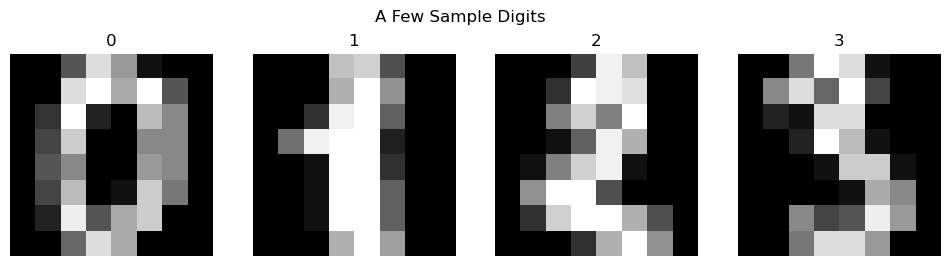
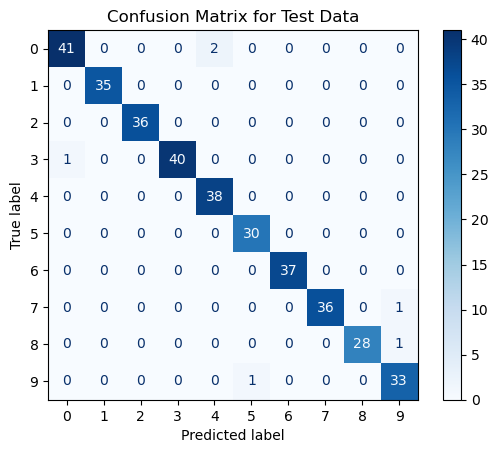

Random Forests for Classification
"Sadly, it's much easier to create a desert than a forest."
- James Lovelock
Random forests is a powerful machine learning algorithm with a foundation in decision trees.
In this blog post, we will discuss how random forests work for classification, and we will work through an example of building a random forest for classification
using the Python library sklearn.

TL;DR
In a previous blog post, we talked about decision trees. While decision trees are helpful, they are what we call a weak classifier. A weak classifier is a model that often performs slightly better than random chance. This is not ideal, so we want to find a way to improve our decision trees. This is where random forests come in. Random forests are an extension of decision trees that help to reduce overfitting. Random forests are a collection of decision trees that are trained on different subsets of the data. Each tree in a random forest is typically trained on a different subset of the data (bootstrap aggregation or bagging), and each tree is trained on a different subset of the features (attribute bagging).
Ultimately, our goal with random forests is to create a set of independent decision trees, creating with both bagging and attribute bagging, that when combined, create a strong classifier. We will discuss how to do this in more detail below.
Bootstrap Aggregation or Bagging
One important aspect of random forests is that we are trying to create a set of independent decision trees. One problem with this, is we are trying to create this set of independent decision trees from a single dataset. This means that each tree will be trained on the same data, and thus, will be very similar. One of the ways to encourage independence in our decision trees is through bootstrap aggregation or bagging (the names can be used interchangably).
Recall from the TLDR section that bagging is when we train each tree on a different subset of the data. The naïve way to do this is to simply remove $p$ data points from the dataset, and use the remaining $n-p$ points to train our decision tree. (This can actually be very helpful because we can use the $p$ points not used to train the tree to test the tree and get error estimation.) But finding the optimal $p$ is tricky. If we make $p$ too small, then our trees will be trained on a majority of the same data and thus be highly correlated. If we make $p$ too large, then our trees will be trained on very small subsets of the data which will produce trees with high bias on the full training set (i.e., the trees will not generalize well to the full data set). The solution to this problem is bagging!
The idea of bagging is repeatively sample $n$ data points from our dataset (with replacement), and training a decision tree based on this sample. We can then do this processes $B$ times to create $B$ decision trees trained on a different subset of the data. This is bagging!
Some advantages of bagging are that it reduces variances, is robust against outliers, and is easy to parallelize. One problem it presents, however, is that it might not use all the data. But, as mentioned above, every data point that is not used to train a tree can be used to test the tree! (This is called out-of-bag or OoB error estimation.)
In general, the probabilty of a point in our data NOT being selected to be used in a specific tree is $(1- 1/N)^n$, where $n$ is the number of points we are using to train our tree. If $n=N$ (so the number of points used to train our tree is the size of our dataset), we now have the probability of a point in our data NOT being selected to be used in a specific tree is
$$\left(1 - \frac{1}{N} \right)^N \to \frac{1}{e} \approx 36\%$$as $N\to\infty$. Thus, on average, $36\%$ of our data will not be used in a given tree. This might be confusing. After all, we are taking $N$ points from our dataset of size $N$ to train the tree. Remember: we are selecting point with replacement. This means that we can select the same point multiple times! Thus, it is quite likely that some data will be left out of any given tree.
Note: just because we are creating $B$ decision trees based on different subsets of data, that does not mean our trees are immune from high correlation. If we have one feature that is a pretty heavy predictor of the target variable, then it is likely that our $B$ trees will all split on that feature. This can still give us highly correlated trees, which weakens our ensemble classifier.
This is where attribute bagging comes in.
Attribute Bagging
In order to reduce the correlation between our trees, we can train each tree on a different subset of features. This is called attribute bagging.
Initially proposed in 1996 by Yali Amit and Donald Geeman, attribute bagging is very similar to bagging, only instead of randomly selecting $n$ data points from our dataset for each tree, we randomly select $m$ features from our dataset for each node. Thus, each node in our tree is trained on a different subset of features. This can not only greatly reduce the correlation between our trees, it also can reduce the computational and temporal cost of building our trees. If we have $M$ features to consider with $M$ being quite later, reducing that to $m < M$ features allows us to build our trees much faster!
Random Forest Classifier
Now that we have discussed bagging and attribute bagging, we can now discuss random forests. Very simply, a random forest is a collection of decision trees built with both bagging and attribute bagging. The combination of these two ideas allow us to create decision trees that are even more independent of each other, compared with decision trees built for bagging or attribute bagging alone. Because of this reason, random forests often outperform trees that are built with bagging or attribute bagging alone.
Here is the main idea of the random forests algorithm:
Start by determining to build $B$ trees and select $m$ features for each node in our tree. Select $n$ data points from our dataset (with replacement) to train our tree on. Start at the root node. Select $m$ features from our dataset (without replacement) to train our node on. Split our node on the feature that minimizes our spliting criterion index. Repeat this process for each node until we reach a leaf node. Repeat this process $B$ times. When we want to predict a new data point, run the data point through each tree in our forest, and take the majority vote of the predictions.
One very nice thing about decision trees is that both the strength $s$ and average correlation $\bar{\rho}$ go down when the number of features we select at each node $m$ goes down. In this case, we define the average correction to be
$$\bar{\rho} = \frac{\sum_{i,j}\text{Cov}(Z_i, Z_j)}{\sum_{i,j}\sqrt{\text{Var}(Z_i)\text{Var}(Z_j)}}.$$Where $Z_k$ is tree $k$, and the strength $s$ is defined to be
$$s = \mathbb{E}[\bar{Z}],$$where $\bar{Z} = \frac{1}{B}\sum_{i=1}^B Z_i$ (simply the average value of the $Z_i$). This is wonderful news because it tells us that the generalization error of our random forest classifier is low! We can verify that is true by using the Breiman bound defined as
$$P(F(X) \not= Y)\leq \bar{\rho}\left(\frac{1 - s^2}{s^2} \right).$$Error Estimation Using the Out of Bag Estimate
As mentioned above, we can use the points not used to create a tree to evaluate how well the tree predicts our data, producing the OoB error estimate. Let's talk real quick about how we might do this.
Once we train our random forest algorithm, we get our ensamble classifier $F$. To get our OoB estimate, we start by looking at tree $1$ in the forest. Get every data point $\{\textbf{x}_i\}_{i=1}^n$ that was not used to train tree $1$. Run each data point through tree $1$ and get the prediction $\hat{y}_i$ for each data point. Use those predictions and the actual values $\{y_i\}_{i=1}^n$ to calculate the error estimate for tree $1$ using whichever error function you desire. Continue this process iteratively for each tree in the forest. Once you have the error estimate for each tree, average them together to get the OoB error estimate for the random forest.
Another way to think about this (with more mathematical notation), if $i$ represents the index of a data point, let OoB$(i)$ represent the set of tree that did not use data point $\boldsymbol{x}_i$ to train. We can calculate the error estimate for data point $\textbf{x}_i$ as
\[ \text{OoBErr}(i) = \frac{1}{|\text{OoB}(i)|}\sum_{\phi\in\text{OoB}(i)}\mathscr{L}(\phi(\textbf{x}_i), y_i), \]Where $\mathscr{L}$ is our loss function. We can then calculate the OoB error estimate for the entire forest as
\[ \text{OoBErr} = \frac{1}{B}\sum_{i=1}^B\text{OoBErr}(i). \]Aside from being computational efficient, the OoB error estimate typically has small bias (i.e., the forest has a lower lever of underfitting), and is approximately as accurate as cross validation while being much faster to compute. This is because using OoB estimates requires us to build one forest, while $k$-fold cross validation requires us to build $k$ forests.
Downsides to Random Forests
One of the biggest strengths of decision trees is their interpretability. It is very easy to take a new piece of data to a decision tree, run it through the tree, and understand how it got to the prediction that it did. This is not the case with random forests. Even though random forests are simply an ensemble of decision trees, because of the use of bagging and attribute bagging to build those trees, interpretability is not a simple as looking at each tree individually and deducing a prediction from that. This, however, should not be a reason to not use random forests. Random forests are still a very powerful tool despite their lack of interpretability!
Another downside to random forests is that despite using bagging and attribute bagging to create 'independent' trees, it is still very easy for these trees to overfit the data. This, of course, is not a problem unique to random forests. To combat this, there are several hyperparameters we can tune to help reduce overfitting. We will discuss these hyperparameters below.
Reducing Overfitting in Random Forests
Most of the ways to reduce overfitting in random forests are the same as the ways to reduce overfitting in decision trees. This includes setting a maximum depth of each tree, setting a minimum number of samples per split and/or a minimum number of samples per leaf. We can choose a maximum number of trees to build, and we can choose a maximum number of features to consider at each node. If time allows, performing a grid search to find the optimal hyperparameters is a great way to reduce overfitting!
Building a Random Forest in Python
Now that we have discussed the theory behind random forests, we will now work through an example of building a random forest in Python.
To do this, we will be utilizing the RandomForestClassification function from the sklearn library, using the mnist dataset.
Start by loading the necessary libraries and the data.
from sklearn.ensemble import RandomForestClassification
from sklearn.datasets import load_digitsWe can look at a few of the images in the dataset to get a feel for what we are working with.
The images are quite grainy (they are only $8\times 8$ pixels), but we can still make out the numbers. Let's see how well a random forest can classify these images.
First, we need to load in and split our data into training and testing sets. We will use $80\%$ of the data to train our model, and $20\%$ to test our model.
# Load in the data
digits_X, digits_y = load_digits(return_X_y=True, as_frame=True)
# Train/test split the data
X_train, X_test, y_train, y_test = train_test_split(digits_X, digits_y, test_size=0.2, random_state=1)Now that we have our data, we can build our random forest. Let's load in our classifier. We will just use a basic tree, making sure we set up our classifier to use bootstrapping and OoB error estimation.
# Load in the classifier
rf = RandomForestClassifier(random_state=1, bootstrap=True, oob_score=True)Now that we have our classifier, we can train it on our training data (keeping track of how long it takes to train).
%%timeit
rf.fit(X_train, y_train)
>>> 223 ms ± 679 µs per loop (mean ± std. dev. of 7 runs, 1 loop each)
Now that we have trained our classifier, we can see the oob_score of our classifier.
rf.oob_score_
>>> 0.9721642310368824This is a pretty good score! This means that our classifier correctly predicted the class of $97\%$ of the data points it did not use to train the model. Let's see how well our classifier does on the test data.
rf.score(X_test, y_test)
>>> 0.983333333333333398.3% accuracy! Not bad! We can visualize the confusion matrix to see how well our classifier did on each class.
From our confusion matrix, we cannot really see any classes that our classifier struggled with. It appears that our classifier did incorrectly predict a few $0$'s as $4$'s, and we can see where the comes from. But overall, our classifier did a pretty good job, especially considering how random forests does not seem like it would work for classifying images!
Conclusion
In this article, we talked about Random Forests, and how they can be used for classification. We discussed the improvements random forests have over decision trees, including bagging and attribute bagging, and we discussed how to build a random forest to classify digits in python! I hope that through this article, you now understand the power of random forests and will consider using them in your next project before you reach for a neural network. If you want to see the code used in this article, you can find it on my Github.